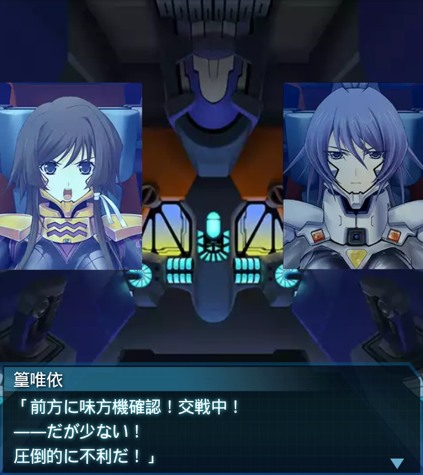

『誰』
「この森林火災はどこまで広がっているのだろうか。外気温が凄い事に
なっているな…」
『誰』
「センサー類の感度と精度が落ちている。全周警戒を怠るな？」
ヘルガローゼ
「『シントウメッキャク』の極意が戦術機にも通じれば良いの
ですが…」
篁唯依
「なるほど『火もまた涼し』か。よくそんな言葉を知っているな。
だが少し用法が違うぞ」

篁唯依
「それは、心を無にすれば苦を苦と思わなくなるという意味で、物理的
な影響をなくせる訳ではない」
ヘルガローゼ
「つまり心の有り様を説いた言葉と言うわけですね？それは勉強に
なりました」
『誰』
「よし、もう少しで森林地帯を抜ける――何だと？ここにも
ＢＥＴＡがっ！？」

篁唯依
「前方に味方機確認！交戦中！――だが少ない！
圧倒的に不利だ！」
『誰』
「まだ部隊の多くが森の中か！？よし俺達が援護するぞっ！」